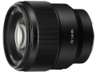
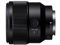
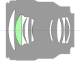

器材库 > 35mm画幅AF定焦镜头 > FE 85/1.8

详细规格
发布日期
2017-02-08
焦距
85mm
最大光圈
f/1.8
最小光圈
f/22
视角（对角）
全画幅：29° / APS-C：19°
镜头结构
9片/8组
低/超低色散镜片
1片
光圈叶片
9片
最近对焦距离
80cm
最大放大倍率
0.13倍
滤镜口径
67mm
镜头卡口
Sony E
防抖
否
颜色
黑色
尺寸
78×82mm
重量
371g
附件
遮光罩，镜头盖
匿名网友2018-06-13 20:364.58 分
操作性 4.50耐用性 4.50性价比 4.50解像力 5.00色彩还原 4.50机械结构 4.50
对不起该名已被使用2017-08-31 09:154.67 分
操作性 4.50耐用性 4.50性价比 4.00解像力 5.00色彩还原 5.00机械结构 5.00
courbet2017-05-14 21:224.42 分
操作性 4.50耐用性 4.50性价比 4.00解像力 4.50色彩还原 4.50机械结构 4.50
无忌社长2017-04-14 17:184.75 分
操作性 5.00耐用性 4.50性价比 4.50解像力 5.00色彩还原 5.00机械结构 4.50
产品图 / 样片
FE 85/1.8

FE 85/1.8

FE 85/1.8
评测 / 相关文章
- 详细内容 （存档）
- 亲民人像大光圈 索尼FE 85mm F1.8镜头评测 （存档）
- ［试用］索尼FE85/1.8镜头实拍样张 （存档）
- ［资讯］第四支GM镜头觐见 索尼两镜一灯新年种草 （存档）
- ［行情］索尼新品开始预订 （存档）
相关文章
- ［试用］索尼FE 85mm F1.8镜头评测 （存档）
- ［试用］索尼FE85/1.8镜头实拍样张 （存档）
- ［资讯］第四支GM镜头觐见 索尼两镜一灯新年种草 （存档）
- ［行情］索尼新品开始预订 （存档）
- ［资讯］索尼发布G大师镜头SEL100F28GM等新品 （存档）
- ［资讯］锐度测试 索尼FE85/1.8 MTF曲线测试 （原站已下线）
- ［试用］淡雅人像利器 索尼FE 85/1.8佳作共赏 （原站已下线）
- ［试用］淡雅人像利器 FE85/1.8佳作名人堂 （原站已下线）